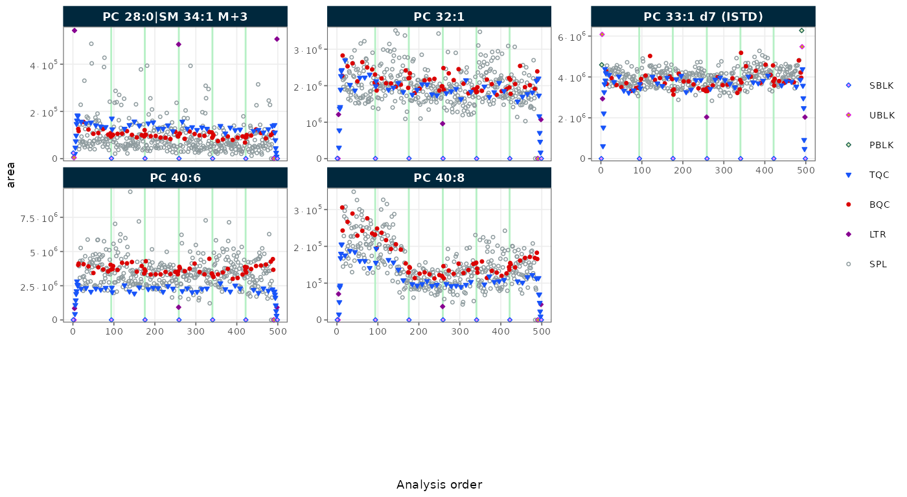
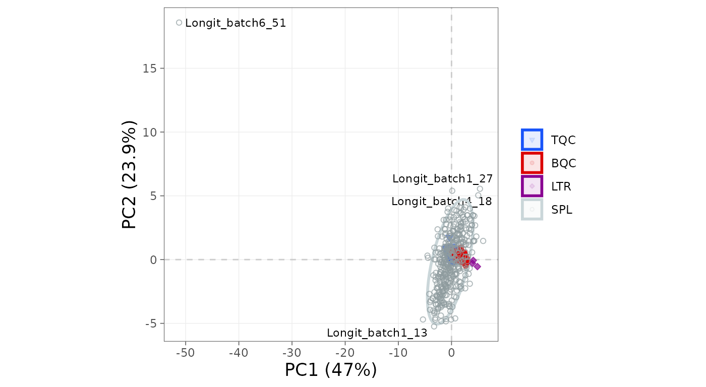

This walkthrough takes an MRMhub result from import to a normalized, exportable dataset in a handful of lines, using demo data bundled with the package so nothing external is needed. It is the shortest path through the pipeline; the workflow tutorials that follow unpack each step in full.
1. Run the complete workflow
The block below is the whole analysis: import the demo result and normalize each feature by its internal standard. Run it and you have a processed dataset.
library(mrmhub)
demo_file <- system.file("extdata", "MRMhub_demo.tsv", package = "mrmhub")
mexp <- MRMhubExperiment()
mexp <- import_data_mrmhub(mexp, path = demo_file, import_metadata = TRUE)✔ Imported 499 analyses with 28 features.ℹ feature_area selected as default feature intensity. Modify with `set_intensity_var()`.✔ Analysis metadata associated with 499 analyses.✔ Feature metadata associated with 28 features.
mexp <- normalize_by_istd(mexp)✔ 19 features normalized with 9 ISTDs in 499 analyses.We then look at the raw peak areas across the analytical run, the first thing to inspect for run-order drift. To keep the figure to a single page, we restrict it to the PC species.
plot_runscatter(mexp, variable = "area", include_feature_filter = "^PC ")
Figure 1. Raw peak areas of the PC features plotted against injection order.
A principal-component plot of the internal-standard–normalized signal gives a first look at how the samples group and whether any injection separates from the rest.
plot_pca(mexp, variable = "norm_intensity")
Figure 2. PCA of the internal-standard–normalized feature intensities.
If you prefer not to write code, build_workflow() opens
an interactive application that validates your data and metadata, flags
pipeline mismatches, and generates an equivalent Quarto workflow to
download (see Build a
workflow without code); the script above remains the reproducible
path.
2. Export the results
Write the processed data to a multi-sheet Excel report, or to a single tidy CSV:
save_report_xlsx(mexp, path = "my_first_results.xlsx")
save_dataset_csv(mexp, path = "my_first_results.csv")3. Check the processing status
mrmhub_status() prints the full processing and metadata
report: what was imported, which steps have run, and which stages still
lie ahead. It is the quickest way to confirm the object is in the state
you expect before moving on.
mrmhub_status(mexp)── MRMhubExperiment ────────────────────────────────────────────────────────────Title:Last step: ISTD-normalized data | signal: feature_area── Samples (499 analyses, 6 batches) ──• Study samples & QCs (488): TQC 48, BQC 59, LTR 3, SPL 378• Blanks & other (11): SBLK 7, UBLK 2, PBLK 2── Features (28) ──• Analytes: 19 Internal standards: 9• Quantifiers: 28 Qualifiers: 0── Metadata ──• Analyses/samples: ✔ (499) Features/analytes: ✔ (28) Internal standards: ✖• Response curves: ✖ Calibrants/QC concentrations: ✖ Study samples: ✖
Interferences: ✖── Processing Status ──• Isotope / interference corrected: ✖• ISTD normalized: ✔ Quantitated: ✖• Drift corrected variables: ✖• Batch corrected variables: ✖• QC metrics calculated: ✖ Feature filtering applied: ✖── Exclusion of Analyses and Features ──• Analyses manually excluded (`analysis_id`): ✖• Features manually excluded (`feature_id`): ✖Next steps
- Key concepts and glossary: understand the data model
- Preparing and importing data: import your own data and metadata
- Basic MRMhub workflow: the full end-to-end pipeline
- Lipidomics data processing: a detailed real-world workflow
- Visualisation functions: the QC plots, and saving figures at a defined size
- Customising plots: size text, legends and points for reports
- Getting help from an AI assistant: use Claude or ChatGPT to help write and troubleshoot your workflow, accurately and safely